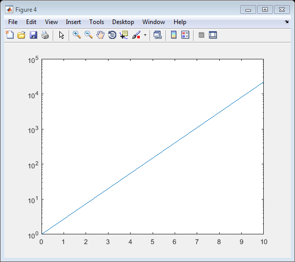

thingSpeakPlot
Create 2-D line plot
Contents
Syntax
thingSpeakPlot(X,Y)
thingSpeakPlot(Y)
thingSpeakPlot(X,Y,Name,Value)
Description
thingSpeakPlot(X,Y) plots vector Y versus vector X. If X or Y is a matrix, the vector is plotted versus the rows or columns of the matrix, whichever line up. If X is a scalar and Y is a vector, disconnected line objects are created and plotted as discrete points vertically at X.
thingSpeakPlot(Y) plots the columns of Y versus their index.
thingSpeakPlot(X,Y,Name,Value) allows you to specify various line types, colors, and data point symbols.
Examples
Create Sine Wave Plot
Create a line plot of a sine wave.
x = 0:pi/100:2*pi; y = sin(x); thingSpeakPlot(x,y)
Create Matrix line Plot
Create line charts from a magic 4 matrix.
Y = magic(4); thingSpeakPlot(Y)
Create Plot with Specific Line Properties
Create line chart with specific line properties.
Specify the following properties:
- Line style: dashed line
- Line width: 2
- Line color: green
- Marker type: square
x = -pi:pi/10:pi; y = tan(sin(x)) - sin(tan(x)); thingSpeakPlot(x,y,'LineStyle','--','LineWidth',2,'Color','green','Marker','s')
Create Plot with Log Scale
Create a line plot on a log scale.
x = 0:0.1:10; y = exp(x); thingSpeakPlot(x,y,'YScale','log')
Create Plot with Grid
Create a plot with a grid in the background.
x = linspace(0,10); y = sin(x); thingSpeakPlot(x,y,'Grid','on')
Create Plots with Date Labels
Create a line plot with date values between 1900 and 1990, with 10 year intervals on the x-axis.
t = (1900:10:1990)'; p = [75.995 91.972 105.711 123.203 131.669 ... 150.697 179.323 203.212 226.505 249.633]'; thingSpeakPlot(datetime(t,1,1),p,'Grid','on')
Create line plot datetime values on the x-axis, in a sequence of dates. Display 10 calendar days.
t = datetime(2015,6,28) + caldays(1:10); y = rand(1,10); thingSpeakPlot(t,y,'Grid','on')

Create Plot with Title and Axis Labels
Create a line plot with a title and axis labels.
thingSpeakPlot([1:10].^2,'XLabel','Time','YLabel','Population','Title','Population in the 1900s');
Input Arguments
X - X values, specified as a scalar, a vector, or a matrix. X can be a numeric array, logical array, or datetime array.
Y - Y values, specified as a scalar, a vector, or a matrix. Y can be a numeric array, or logical array.
Name-Value Pair Arguments
Specify optional comma-separated pairs of Name,Value arguments. Name is the argument name and Value is the corresponding value. Name must appear inside single quotes (' '). You can specify several name and value pair arguments in any order as Name1,Value1,...,NameN,ValueN.
Example: thingSpeakPlot(x,y,'Color','red','LineStyle',':','Marker','o')
'Color' |
Line color, specified as an RGB triplet or a color string. The default RGB triplet value of [0 0 1] corresponds to blue.
Example: thingSpeakPlot(x,y,'Color',[1 0 1]); Example: thingSpeakPlot(x,y,'Color','yellow') |
||||||||||||||||||||||||||||||
'LineStyle' |
Line style, specified as one of the line style strings listed in this table.
|
||||||||||||||||||||||||||||||
'LineWidth' |
Area outline width, specified as a positive scalar in point. Example: thingSpeakPlot(x,y,'LineWidth',1.5); Data Types: single|double|int8|int16|int32|int64|uint8|uint16|uint32|uint64 |
||||||||||||||||||||||||||||||
'Marker' |
Marker symbol, specified as a string listed in the table.
Example: thingSpeakPlot(x, y,'Marker','p'); |
||||||||||||||||||||||||||||||
'YScale' |
Y-axis scale, specified as a string. Allowed values are 'linear' or 'log'. Example: thingSpeakPlot(x, y,'YScale','log'); |
||||||||||||||||||||||||||||||
'Grid' |
Plot grid, specified as a string input turning the grid 'on' or 'off'. Example: thingSpeakPlot(x,y,'Grid','on'); |
||||||||||||||||||||||||||||||
'YLabel' |
Y-axis label, specified as a string. Example: thingSpeakPlot(1:10,'YLabel','Y-Axis'); |
||||||||||||||||||||||||||||||
'Xlabel' |
X-axis label, specified as a string. Example: thingSpeakPlot(1:10,'XLabel','X-Axis'); |
||||||||||||||||||||||||||||||
'Title' |
Title of plot, specified as a string. Example: thingSpeakPlot(1:10,'Title','Plot Title'); |
||||||||||||||||||||||||||||||
'XGrid' |
Specify if your plot has a grid only on the X axis. Set the value to 'on' to display an X axis grid. |
||||||||||||||||||||||||||||||
'YGrid' |
Specify if your plot has a grid only on the Y axis. Set the value to 'on' to display a Y axis grid. |
||||||||||||||||||||||||||||||
'Legend' |
Add a legend to your graph, specified as a cell array of strings. Example: thingSpeakPlot(x,y,'Legend',{'Sine','Cosine','Tangent'}); |
See Also
thingSpeakArea | thingSpeakPlotYY | thingSpeakRead | thingSpeakScatter | thingSpeakStem | thingSpeakWrite | urlFilter